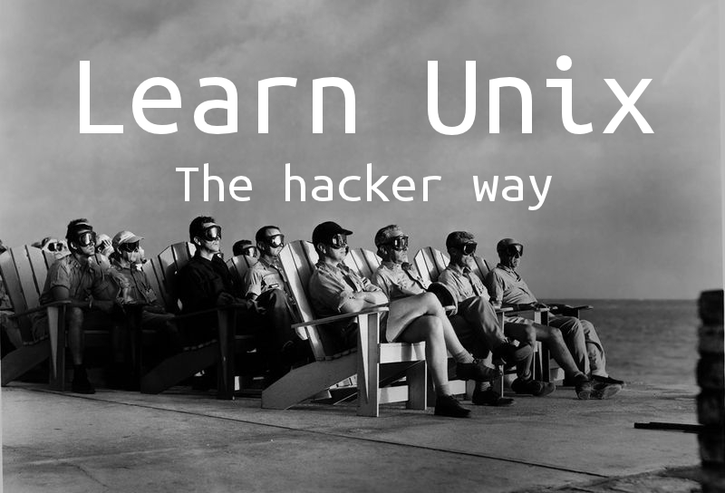

~/ et /home/MONUTILISATEURLearn Unix the hacker way avant d’être un livre, est un tutoriel.
Il est modestement destiné à guider ceux qui desirent apprendre les fondamentaux d’Unix dans leur quête.
A éclairer ceux qui souhaitent apprendre un peu plus de la chose avec qui ils passent leur journée: leur ordinateur.
Ou encore, plus simplement, les intarissables curieux.
Et bien Unix, c’est un système d’exploitation. Crée en 1969 par deux ingenieurs des Bell labs: Ken Thompson et Dennis Ritchie(également créateur du langage C) aux etats-unis.
C’est à dire que c’est “un ensemble de programmes qui dirigent l’utilisation des capacités d’un ordinateur par des logiciels applicatifs”(Source).
C’est, en très gros, le cerveau qui permet à votre ordinateur de faire des choses, comme stocker des informations sur votre disque dur, exécuter vos applications, commander à votre écran d’afficher vos photos.
Vous connaissez sans doute déjà d’autres systèmes d’exploitation, parfois même sans le savoir. Parmi eux: Windows, OSX, Linux… [TO BE CONTINUED TODO]
Ce livre s’organise en sessions relatives aux thématiques des systèmes unix.
Chaque session consistera en une serie d’exercices didactiques et progressifs.
Suivi d’explications des concepts et de l’historique des concepts manipulés lors de ceux-ci.
Enfin, des “cheat codes”, en fait les solutions des exercices, au cas où les moins perseverant d’entre vous se cherchent une béquille.
Learn Unix the hacker way vous propose une manière didactique, excitante, parfois rigolote, mais surtout autodidacte de vous former a l’ecosystème Unix.
Son but n’est pas de faire de vous des stars du clavier, quand bien même certains pourraient se découvrir une vocation.
Son but n’est pas non plus de remplir votre cerveau d’un tas de connaissances que vous vous empresseriez d’oublier.
Mais bien plutôt de vous apprendre à apprendre par vous-même. A chercher, vous interroger, tourner en rond, eprouver cette joie indicible de parvenir à resoudre un problème après des heures à l’avoir tourné et retourné dans tous les sens.
Son but est de vous donner envie; de connaitre mieux votre camarade, j’ai nommé l’ordinateur; de maitriser ses compétences, de l’utiliser sans restrictions; d’en apprendre encore plus.
[ TODO: * On utilise les ordinateurs quotidienement, on delai tout un tas d’operation aux ordinateurs, on leur confie notre vie, sans vraiment ni savoir les utiliser, ni comprendre comment ils fonctionnent. Confier les cles de chef soi a un inconnu? Non. Alors pourquoi confier
En plus, les ordinateurs, et tout ce qui tourne autour ont souvent la reputation d’etre complexe, complique a apprehender, une elite souvent deconsidere, alors que comme nous l’ont prouve recemment arduino et raspberry pi, ils sont fun, peuvent s’averer de veritables objets de creation, et sont un vrai sujet d’emerveillement et d’apprentissage constant.
L’informatique est un domaine “scientifique” certes, mais une opportunite incomparable de rendre la science didactiqe, rigolote, et “reel”. Elle permet d’apprendre et d’exprimenter avec le minimum de bagages possibles et sans risque (blague sur marie curie, le radium tout ca)
]
[ TODO: * A l’origine ecrit pour une journaliste equipee d’un mac, desireuse d’apprendre comment il marchait “vraiment”.
N’importe qui, du berceau au tombeau, peut realiser ces exercices
Plus, n’importe qui devrait y trouver son compte, de celui qui veut juste se la jouer en soiree avec un terminal noir sur blanc, celle qui veut mieux comprendre comment ca marche vraiment, a celui ou celle qui veut devenir le prochain guru des hackers, et suivre le lapin blanc.
Pense pour etre didactique, progressif, et sans contrainte temporel. On peut le prendre, l’arreter, le reprendre, l’oublier, et y revenir.
]
[ TODO: * Theo crevon, ingenieur a la sauvette. Poete a l’aide de petits bouts de codes. Photographe parfois. Et ecrivain selon l’humeur. Desireux de partager, et de vulgariser, ce que sa formation et son experience lui ont fait acquerir. * Avec l’aide de Nathan mustaki : description * Avec comme cobaye totalement consentent Morgane Tual
]
TODO
1. Trouve comment ouvrir un terminal.
2. Maintenant, documente toi pour savoir ce qu’est une commande sur un système Unix.
3. Quelle est la syntaxe pour passer des options a une commande?
4. Trouve les commandes qui permettent d’effectuer les actions suivantes :
Imprimer à l’écran l’endroit sur le système de fichier ou tu te trouves actuelement.
Lister le contenu d’un dossier. Quelle option passée à cette commande permet de lui faire lister recursivement le contenu d’un dossier ? Quelle combinaison d’options permet de lister les fichiers en affichant leur date de creation, l’utilisateur qui les a crée, et les droits que celui ci a dessus ( on verra plus en détail les droits plus tard)
Se déplacer dans le système de fichier.
Copier un fichier. Ainsi que l’option qui permet à celle-ci de copier un dossier.
Deplacer un fichier. Déplacer un dossier.
Renommer un fichier (Ce n’est pas nécéssairement une nouvelle commande). Renommer un dossier.
Effacer un fichier. Ainsi que l’option qui permet à celle-ci d’effacer un dossier.
Créer un dossier.
Créer un fichier.
Ecrire dans un fichier et le sauver dans ~/Desktop.
Nota: Tu peux utiliser un petit outil en ligne de commande présent par défaut sur la plupart des systèmes unix baptisé nano. Familiarise toi avec, il est très très simple d’utilisation, et s’avérera très pratique.
5. Documente toi un petit peu pour être apte à répondre à la question: Mais au fait, c’est quoi un système unix? C’est quoi la difference avec windows?
Maintenant, un défi, pour pratiquer sur un cas concret: Trouve avec quelle commande et quelles options te connecter au serveur hackerway.oleiade.com via le protocole ftp en ligne de commande. Une fois connecté, trouve le moyen de rappatrier le fichier defi_ftp dans le dossier sur ta machine ~/Downloads (si ce second n’existe pas, crée le)
Note pour les pessimistes: C’est plus simple que ca en a l’air.
Au préalable
Je te conseille de lire quelques petits tutoriels pour comprendre ce qu’est un système de fichiers, à quoi ça correspond, et surtout à quoi ca ressemble.
Le système de fichier, c’est le nom qu’on donne à l’agencement des fichiers et dossiers sur ton ordinateur. C’est là où il, toi, et tous les utilisateurs du système vont ranger leur données.
Tu peux le considérer comme un gros arbre avec des branches.La plupart des systemès unix partagent cette hiérarchie.
Ensuite, sache que la commande qui te sauvera toujours la vie, et qui a donné naissance à la fameuse réplique “RTFM” (Read The Fucking Manual) sur les forums techniques est man.
Pour chaque commande du système, tu as ce qu’on appelle un man. Par exemple, si tu tapes ‘man cat’ le manuel d’utilisation de la commande cat, detaillant son utilisation et toutes les options que tu peux lui passer s’affichera à l’écran.
TODO
TODO
TODO
TODO
TODO
TODO
Raspberry Pi : Si vous vous exercez sur cette plateforme, c’est que vous etes probablement deja au fait de l’utilisation d’un terminal.
OSX : L’application Terminal se trouve dans /Applications/Utilitaires
Linux: Généralement, sur les distributions Linux, vous trouverez le terminal dans le menu Applications puis dans la section Utilitaires ou Outils système ou assimilés.
Généralement une même option d’une commande unix à deux syntaxes possibles. Elle se distingue par le nombre de tirets qui la précède: 1 ou 2.
Lorsqu’une option est passée à l’aide d’un seul tiret, son nom ne se compose que d’une seule lettre.
Cependant on peut cumuler à la suite d’un seul tiret autant d’options composée d’une lettre unique qu’on le souhaite.
Par exemple, sont valides:
macommande -o et macommande -oadks ainsi que macommande -o -a -d -k -s
Par ailleurs, certaines options nécéssitent de leur passer une valeur, d’autres agissent comme des “flags” et ne nécéssitent de passer aucune valeur.
Une option peut généralement être utilisée avant, ou après les arguments obligatoires de cette commande ( par exemple la commande ls prend obligatoirement une série de chemins dont elle devra lister le contenu).
Exemples:
Avec une option écrite avec un tiret simple et en passant une valeur
macommande arg1 -o [valeurdeloption]
ou
macommande -o [valeurdeloption] arg1
Qui géneralement a sa variante en toutes lettres précédée par deux tirets
macommande --option [valeurdeloption] arg1
Imprimer à l’ecran l’endroit où l’on se trouve
pwd
Lister le contenu d’un dossier
ls
Lister récursivement le contenu d’un dossier
ls -R
Lister les fichiers ainsi que leur date de création, l’utilisateur qui les a crée et les droits afférents à celui-ci.
`ls -la
Se déplacer dans le système de fichiers
cd madestination
Copier un fichier
cp monfichier madestination
Copier un dossier
cp -r mondossier ma destination
Déplacer un fichier ou un dossier
mv monfichieroudossier destination
Renommer un fichier ou un dossier
Généralement, on utilise également la commande mv pour renommer des fichiers et dossiers.
Attention cependant, lorsque vous renommez un fichier ou dossier dans un endroit différent de celui où vous vous trouvez actuelement en utilisant mv, il est important de respecter le chemin complet du fichier de départ ainsi que du fichier d’arrivée.
mv monfichier nouveaunomdufichier
Effacer un fichier
rm monfichier
Effacer un dossier
rm -rf mondossier
Créer un dossier
mkdir mondossier
Lorsque vous souhaitez créer une imbrication de dossiers en une seule commande, vous pouvez utiliser l’option -p
mkdir mondossier/imbrique1/imbrique2
Créer un fichier
touch monfichier
Créer et écrire dans un fichier sur ~/Desktop
nano ~/Desktop
1. Quelle est la différence entre ~/Desktop, /home/TONUTILISATEUR/Desktop (/Users/TONUTILISATEURS/Desktop sur OSX) ?
Quand tu tapes / et que tu appuies deux fois sur la touche Tab que se passe t’il ? Qu’en conclus-tu ? Ca ne te rappelle rien ?
Jette à nouveau un coup d’oeil à la hiérarchie du système de fichiers unix, ça pourrait t’éclairer.
2. Comment lire un fichier, c’est à dire, à l’aide de quelle commande qui ne soit ni nano/vi ou tout autre “éditeur de text” conventionel en afficher le contenu à l’écran?
3. Comment afficher les dernières lignes d’un fichier?
Comment afficher les premières?
Quelle est l’option commune à ces deux commandes pour lui spécifier combien de lignes depuis le début/la fin on souhaite afficher à l’ecran?
4. Quelle commande utiliser pour chercher des occurences (des expressions) dans un fichier?
Par exemple, si tu crée un fichier jackson5 avec le contenu suivant dans ~/Desktop:
ABC
Easy as...
123
As simple as...
Do re mi
ABC, 123, baby, you and me girl
ABC
Easy as...
123
As simple as...
Do re mi
ABC, 123, baby, you and meComment vérifier que celui-ci contient bien l’occurence 123?
Comment trouver tous les fichiers dans ~/Desktop qui contienent l’occurence “As simple as…”
Comment trouver tous les fichiers dans ~/Desktop qui matchent l’expression régulière(quéquécé??) ^ABC$?
5. A l’aide de quelle commande peux-tu compter le nombre de lignes dans un fichier?
Combien y en a t’il dans le fichier que je t’ai fait créer precedement ?
6. Quelle commande utiliser pour chercher des fichiers/dossiers sur le file system?
Comment trouver à l’aide de celle-ci tous les dossiers qui se nomment MONUTILISATEUR à l’interieur du dossier /home (/Users sur OSX)?
Comment trouver à l’aide de celle-ci tous les fichiers qui s’appellent MONUTILISATEUR sur le disque dur, c’est à dire, à partir de / ?
A cette fin, n’hésite pas à revoir l’agencement et la hierarchie du filesystem unix.
7. Qu’est-ce qu’un lien sur un système Unix?
Quelle commande permet d’en faire un?
Quelle difference entre un lien symbolique et un lien “dur”(ou hardlink)?
Comment faire un lien symbolique du fichier précédemment crée dans le dossier ~/Desktop afin de pouvoir y acceder depuis ~/?
8. Quelle est l’adresse ip locale de tous les ordinateurs? (localhost)
Quelle phrase célèbre sur les internets fait référence à cette ip universelle?
Comment trouver l’ip d’un domaine?
Par exemple:
Trouve l’ip de oleiade.com, celle de twitter.com… Comme toujours avec les systèmes Unix, il y à plusieurs methodes possibles.
Comment découvrir le temps que met un site à te répondre? Avec quelle commande?
9. Trouve une commande (qui ne soit pas curl) qui te permette de télécharger un fichier depuis son Url.
Rappatrie dans ~/Desktop, et affiche les 42 dernières lignes du fichier situé à l’url suivante: http://wiki.freebase.com/images/e/eb/Steve-martin-quad-sample.txt
A l’aide de la commande curl, que tu auras probablement à installer sur ta machine, je voudrais que tu télécharges et écrive dans un fichier oleiade_com.html dans ~/ la page d’accueil de http://oleiade.com.
TODO
TODO
TODO
TODO
TODO (Et Les caracteres non affichables qui permettent de demarque un mot, une ligne, un tab etc… (space). )
TODO
TODO
TODO
~/ et /home/MONUTILISATEURC’est bien simple il n’y a virtuelement aucune différence entre la notation ~/ et /home/MONUTILISATEUR.
En effet, le shell remplace automatiquement le symbole ~ par le chemin vers le HOME directory de l’utilisateur courant.
Généralement la commande utilisée est cat
tail monfichier
A noter que l’on peut explicitement déterminer combien de lignes nous souhaitons que tail affiche en partant de la fin à l’aide de l’option -n.
tail -n 200 monfichier affichera ainsi les 200 dernières lignes du fichier.
head monfichier
La commande head partage avec tail les mêmes options et a un usage tout à fait similaire.
La commande grep permet de chercher des occurences dans des fichiers et respecte l’usage suivant:
grep occurence mesfichiers
Donc, pour chercher les occurences de “123” dans les fichiers du dossiers ~/Desktop, celle-ci peut-être utilisée de la façon suivante:
grep "123" ~/Desktop/jackson5
Sachant que l’option -r comme vous l’aurez probablement déjà deviné indique à grep de chercher l’occurence récursivement dans les fichiers situés dans ~/Desktop on peut rechercher l’occurence “As simple as…” dans ceux-ci comme ceci:
grep -r "As simple as..." ~/Desktop
Enfin, pour trouver tous les fichiers dans ~/Desktop qui continent une occurence matchant avec l’expression regulière “^ABC$”, il faut utiliser l’option -G de grep:
grep -rG "^ABC$" ~/Desktop
wc -l monfichier
find pointdedepart -name nomdefichier
Ainsi pour chercher tous les fichiers s’appellant MONUTILISATEUR dans /home (ou /Users sur OSX) on utilisera find comme suit:
find /home -name "MONUTILISATEUR"
La commande qui permet de faire des liens est : ln
Aussi, ln -s fichieralier fichierlie permet de faire des liens symboliques. Donc, ln -s ~/Desktop/jackson5 ~/ créera un lien symbolique jackson5 dans ~/ Qui pointera vers le fichier ~/Desktop/jackson5
Universelement, l’adresse ip locale de tous les ordinateurs est 127.0.0.1 ainsi, toute communication avec cette adresse ip vous adressera toujours… à votre propre ordinateur.
La célèbre référence à découvrir était: “There no such place like 127.0.0.1” (Que l’on peut traduire comme suit: “Rien ne vaut 127.0.0.1”)
La commande ping n’est pas initialement prévue à cette fin, cependant elle s’avère très pratique dès lors qu’il s’agit de trouver l’adresse ip d’un domaine.
Ainsi ping oleiade.com ou ping twitter.com devrait vous révéler l’ip de la machine qui vous “sert” les sites oleiade.com et twitter.com.
wget url
Donc, pour télécharger le fichier mentioné dans la question et afficher les 42 dernieres lignes de son contenu:
wget http://wiki.freebase.com/images/e/eb/Steve-martin-quad-sample.txt -o ~/Desktop/Steve-martin-quad-sample.txt
puis
tail -n 42 ~/Desktop/Steve-martin-quad-sample.txt
Jusqu’ici on s’est contente d’operations assez basiques dans l’ensemble: demander au systeme d’effectuer une, et une seule action a la fois.
Cependant le shell sait faire beaucoup plus que ca, et met a disposition ce qu’on appelle des operateurs qui permette par exemple d’exprimer le AND(fais ceci, et, cela), le OR (fais ceci, ou, si ca ne marche pas, fais cela), le PIPE, les superior, inferior.
Leur apprentissage peut etre fastidieux, moi-meme je n’en utilise quotidienement qu’un lot tres restreint. Parcours les internets pour en apprendre un peu plus et c’est parti:
1. Quel est l’operateur qui permet de chainer des commandes? C’est a dire de les executer a la suite les unes des autres?
2. Tu te rappelles le symbole ~ ? Lorsque tu l’utilise au sein des arguments d’une commande, le shell comprend qu’il doit le remplacer par le dossier principal de ton utiliser (/Users/MONUTILISATEUR sur ton mac). Il y a un autre symbole qu’il interprete comme : remplacer ce symbole par le dernier repertoire dans lequel je me situais avant celui-la, quel est-t’il ?
Il y en a encore un autre qu’il interprete comme : remplacer ce symbole par la liste de tous les elements de ce dossier, lequel est-il?
3. Trouve le moyen en une seule commande de : te deplacer dans le dossier /Users/MONUTILISATEUR/Downloads, en afficher le contenu, puis te deplacer dans le dossier /etc, afficher les 42 dernieres lignes du fichier passwd qui s’y trouve, enfin de retourner dans le dossier /Users/MONUTILISATEUR/Downloads.
Attention, ici j’attend que tu utilises ce que tu as appris a point 1. et 2.
4. (optionel parce qu’un peu complexe) Il y a un operateur qu’on appelle de redirection (superieur ou inferieur) qui permet, comme son nom l’indique de rediriger la sortie d’une commande dans une autre.
A l’aide de echo, sauras-tu inserer “Hello World” dans un fichier mypleasure.txt a l’aide de l’operateur superieur?
Nota: Je ne l’avais pas mentione jusqu’ici, mais un programme sur unix, a ce qu’on appelle une entree (les fichiers que tu lui demande de traiter, d’utiliser, (c’est le cas de ls), le texte que tu lui demande de manipuler (c’est le cas de cat, ou de grep quand tu lui demande de trouver une occurence), et une sortie: le resultat.
Il est important de garder a l’esprit que toutes ces entrees, et sorties sont dites “normalisees”, ces normes sont generalement definies par ce qu’on appelle la norme POSIX (C’est pour la culture generale).
Donc tu peux parfaitement, envoyer la sortie d’un programme, en tant qu’entree d’un autre. C’est trop abstrait?
Un exemple:
Je peux trouver tous les fichiers qui contienent “test” dans le dossier /Users/MONUTILISATEUR en envoyant le resultat de la commande ls dans l’entree de grep, c’est l’operateur pipe:
ls /Users/MONUTILISATEUR | grep5. Trouve une commande qui permette de lister tous les processus en cours sur ton ordinateur, et recherche-y firefox :)
6. Qu’est-ce qu’un groupe sur un systeme unix? qu’est-ce qu’un administrateur? quel est son nom? Comment executer une commande en tant qu’administrateur?
7. A l’aide de quelles options de la commande ls peut-lister en version longue l’integralite de tous les fichiers d’un dossier (tu peux au passage utiliser l’un des symboles decouverts plus haut) ?
A quelle information correspond chacun des elements de la ligne?
Si tu utilises cette methode sur ton dossier HOME (/Users/MONUTILISATEUR ou ~/), et que tu compares le resultat avec ce que t’affiches le finder dans ce meme dossier, que constate-tu? Qu’est-ce qui en est la cause?
8. Puisque dorenavant, tu sais quel element dans ce listing represente les droits afherents a ces fichiers, a quoi correspondent chacun des dix membres de cet elements? (d f ou l, puis r, w, ou x repetes).
9. Comment change t’on les droits d’un fichier? 10. Comment change t’on les droits d’un dossier? 11. Comment change t’on son possesseur? (owner)
12. Creer un fichier /Users/MONUTILISATEUR/test et change ses droits afin que l’utilisateur ai le droit d’y ecrire, de le lire, de l’executer, son groupe ai les memes droits, et qu’un utilisateur lambda n’ai le droit que de le lire. * Change le owner de ce fichier afin que ce soit root * Change le groupe de ce fichier afin que ce soit root egalement * Est-ce que sans utiliser la commande qui permet d’etre administrateur tu parviens a y ecrire dorenavant? pourquoi?
En preambule de la suite, je voudrais que tu apprenes a utiliser la commande ssh et la commande scp.
Documente toi un peu sur ce que c’est que le protocole ssh (scp en est une extension, est-ce que tu peux deviner juste a l’aide de son nom a quoi elle sert).
Le but du jeu sera dans un premier temps de parvenir a te connecter au serveur ssh hackerway.oleiade.com, a l’aide de l’identifiant : hackerway et du mot de passe : asimov, via le port 4242 (tiens, tiens, c’est quoi un port unix?
Et tiens, au fait, c’est quoi tcp, aussi appelle tcp/ip, c’est quoi la difference avec udp? ) et d’y creer un fichier victoire.diditbitch dans lequel tu me mettras un super message d’amour.
Puis de te deconnecter, et de telecharger ce fichier sur ton ordinateur a l’aide de la commande scp.
Enfin, si tu y arrives, tu m’enverras son contenu par mail en chainant la commande cat sur ce fichier, et la command mail (qui permet, comme son nom l’indique d’envoyer des mails, elle est peu abrupte dans un premier temps, hesite pas a googler pour trouver comment l’utiliser)
TODO
1. Comment creer le dossier /Users/morgane/Downdloas/I/Love/You en une seul commande
2. Meme si tu n’as pas internet sur ta machine, connecte toi en ssh a l’ip 127.0.0.1 avec l’utilisateur morgane et le meme mot de passe que ton mac? Est-ce que cela marche? A ton avis, pourquoi?
Qu’est-ce que tu en deduis de ce que represente l’ip 127.0.0.1? qu’est-ce que tu en deduis a propos de ssh?
3. Cree le dossier ~/ThisIsATest et cree y un fichier abc contenant “easy as” , ainsi qu’un autre fichier 123 contenant “or simple as” a l’aide d’une seule commande. Puis copie le dossier ~/ThisIsATest dans ~/Downloads a l’aide de la commande scp.
4. Cree un lien symbolique pointant sur le fichier ~/ThisIsATest/abc dans ~/Desktop. Ecris dans celui-ci “one, two, three, baby, you and me!” sans utiliser d’editeur.
Si tu te sers d’une commande que tu as deja rencontre pour afficher le contenu du lien symbolique representant le fichier ~/Desktop/abc, que constates-tu?
Si maintenant tu utilises l’operateur >> pour ecrire “Come on, let me love you just a little bit!” a la fin du fichier represente par le lien symbolique ~/Desktop/abc, qu’est ce qui arrive au fichier ~/ThisIsATest/abc? pourquoi?
5. cut : cette commande permet de decouper des morceaux de lignes a l’aide d’un delimiteur. A l’aide cette commande, affiche les colonnes 1 et 5 du fichier /etc/passwd. Ce fichier contient des informations sur tous les utilisateurs de ton ordinateur.
Pour info, avoir plusieurs utilisateurs permet de limiter les degats en cas d’attaque/virus/fin du monde, et c’est ce qui explique que Windows est une passoire, et aue ton serveur soit sous Linux (mummmm).
6. Affiche le contenu du fichier /etc/passwd. Puis compte le nombre de lignes de ce fichier. Maintenant, obtiens le meme resultat en utilisant l’operateur | (pipe). Est-ce que son fonctionnement te semble plus clair ? Continue de jouer avec | : refais le #5 en utilisant |, plutot que de passer le fichier directement en argument.
Il y a bien longtemps, quand les ordianteurs prenaient plus de place que ton appartement, on s’y connectait a distance a partir de “terminaux”, des ecrans munis d’un clavier, et le programme charge d’interpreter tes commandes et de les transmettre a l’ordinateur s’appelait un shell.
Aujourd’hui, tu as les trois dans le meme objet : ordinateur, ecran et logiciel pour transmettre tes commandes. Citons le poete : le shell est bien un coquillage, mais tu entends les “bruits” de l’ordinateur, et en plus tu peux lui parler.
A chaque fois que tu lances un shell, ou interpreteur de commande, il charge un “environnment”, qui lui permet d’avoir un certain nombre d’ informations sur ton systeme et tes preferences.
Par exemple, ou sont enregistres les programmes sur ton ordinateur. Le shell te procure un certain nombre d’utilitaires integres pour te faciliter la vie, comme les |, les >> et <<, etc…
7. tape la commande env
8. Dans tout le fratras qui s’affiche, quelle ligne contient :
9. Lis a la fin de ce fichier le man de la commande export
Cree une variable biteenbois avec pour valeur popeye.
Pour verifier que tout s’est bien passee, cherche la dans l’environmment avec grep en une seule commande.
10. En toute logique, la commande pour supprimer une ligne de l’ environnement est unset.
Supprime donc la variable que tu viens de creer.
11. Recree une nouvelle variable capitaine ave comme value hadock
Ouvre un nouveau terminal et cherche cette valeur dans l’env (pas a la main, fais faire le boulot)
Ouvre un troisieme terminal, et cherche la egalement. Qu’en conclus-tu ?
12. L’important c’est le chemin…
Supprime la variable PATH et essaye de lancer quelques commandes selon ton bon plaisir. Rigolo non ?
Qu’en conclus tu ? Est-il possible de retablir la variable path ?
Man export
Set an environment variable. Mark each name to be passed to child processes in the environment.
Syntax
export [-fn] [-p] [name[=value]]
Options
-f The names refer to shell functions;
otherwise the names refer to shell variables
-n No longer mark each name for export.
-p Display output in a form that may be reused as input.
If no names are supplied, or if the `-p' option is given, a list of exported names is displayed.
The return status is zero unless an invalid option is supplied, one of the names is not a valid shellTODO
Avant toutes choses, un peu de theorie.
Jusqu’ici, tu t’es contente de papoter avec ton syteme au travers du shell. De lui donner quelques ordres, en les chainant parfois.
C’est très pratique, mais parfois, tu pourrais avoir besoin d’automatiser un peu tout ca. Heuresement, les papas d’Unix ont pense a tout.
C’est ce qu’on appelle le shell scripting, et ça consiste a écrire dans un fichier une série d’instruction. Lorsque tu demanderas au shell d’exécuter ce “script” il effectuera cette série d’instruction les unes a la suite des autres; tu me concéderas que c’est quand meme beaucoup plus pratique que de les retaper une a une a chaque fois.
Le shell script a la réputation d’avoir une syntaxe un peu abrupte pour les débutants, mais c’est aussi une bonne manière d’appréhender pourquoi des langages comme le Python que nous verrons plus tard existent.
Il n’est cependant pas insurmontable, et reste toujours très pragmatique, je t’ai donc trouve une documentation utile qui pourrait t’aider dans ta quête du jour: http://www.freeos.com/guides/lsst/ch02sec01.html
Nota
On peut considerer le shell comme un telephone avec une ligne direct avec ton système d’exploitation, et plus précisément avec un élément clé de celui qu’on appelle le kernel (plus communément baptise le noyau); c’est lui qui traduit et gère les instructions que tu lui donnes pour les faire exécuter par la machine.
On peut donc considérer que d’une certaine manière, interagir avec le système d’exploitation unix via le shell serait comme donne des instructions a qui on aurait bande les yeux.
1. Creer un fichier hello.sh dans ~/Desktop, qui affiche a l’écran “Hello world /”, il y a quelques prerequis: s’assurer que le fichier soit exécutable, utiliser un shellbang, et trouver comment l’exécuter, le tutoriel sur le shell script que je t’ai fournis plus haut devrait aider.
2. Modifie le script hello.sh, et cree une variable NAME au sein de laquel tu mettras comme valeur le nom que tu veux, et fait en sorte que le script affiche a l’écran “Hello VALEURDELAVARIABLENAME /”
3. Exploitons un peu les variables d’environnement. Les shell script sont comme leur nom l’indique exécute par ton shell, donc elle partage l’environnement de celui-ci (voir les journées précédentes).
Cree donc une variable d’environnement HELLONAME dont tu setters la valeur selon tes souhaits, et fait en sorte que ton script affiche dorénavant a l’écran “Glad to me meet you VALEURDELAVARIABLE_HELLONAME”
4. Creer un nouveau fichier de script fate.sh, ainsi qu’une variable DESTINY dans l’environement dont la valeur serait 1.
Au sein de ce script, a l’aide des expressions conditionelles, tu afficheras “Youpi tralala” si la valeur de la variable d’environement DESTINY cree plus tot est 1, “Too bad” si c’est une valeur differente.
Fait les tests en changeant la valeur de DESTINY dans ton environement avant de lancer le script.
5. A l’aide d’une boucle (indice : for (beaucoup d’exemples sur les internets)), cree dix fichier test_n avec n de 1 a 10 et dans chacun d’entre eux, insere “I’m VALEURDEN” :) dans un dossier suffix_test dans /tmp (la notion de droit peut entrer en ligne de compte)
6. A l’aide d’une boucle et d’expressions conditionelles, affiche les contenu de tous les fichiers precedement cree dont le suffixe n est pair. Puis dont le suffixe n est impair.
Je voudrais que tu ecrives un premier script shell quicree un dossier “medias” dans ~/Downloads, et qui cree 10 fichiers suffixes (n, comme dans les precedents exercices) avec comme extensions .avi, 10 autres suffixes avec l’extension .jpg, et encore 10 autres suffixes avec l’extension .mp3.
Et qu’ensuite tu ecrives un second script qui cree au sein du dossier “medias” precedemment cree trois autres sous-dossiers : films, photos, musique. Et que celui-ci deplace tous les fichiers dans medias avec l’extension avi dans films, tous ceux avec l’extension jpg dans photos, et tous ceux avec l’extension mp3 dans musique.
Voila voila, si tu trouves ca plus dur, c’est tout a fait normal. Mais comme toujours la cle de tout ca, c’est la pratique, la perseverance, et l’espoir de decouvrir un langage plus simple, plus joli et plus puissant… Un jour il sera tiens, ohhhh oui un jour il sera tiens!
TODO